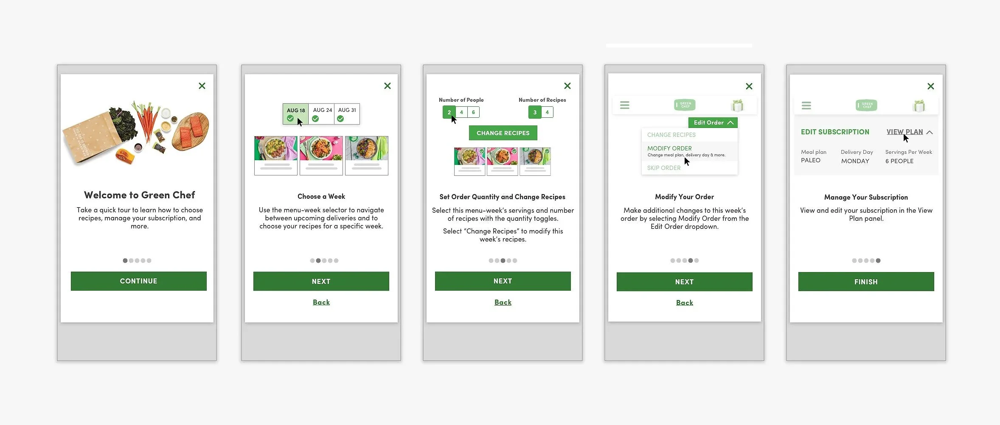
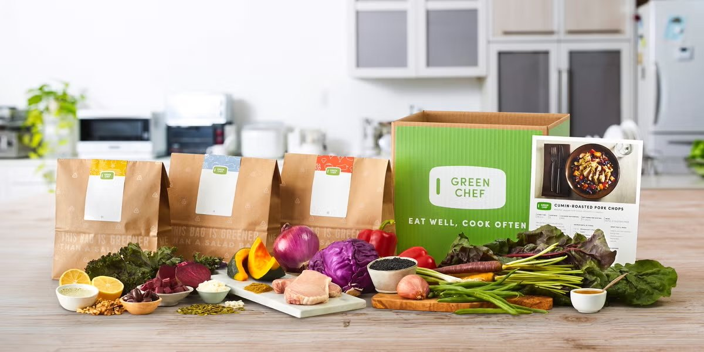
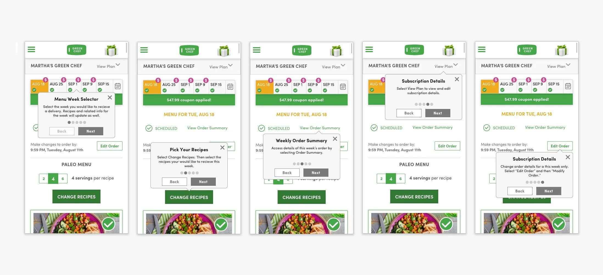
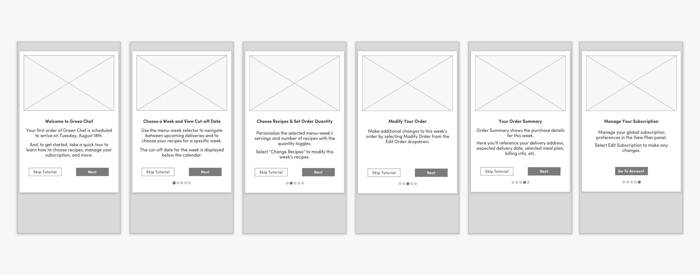
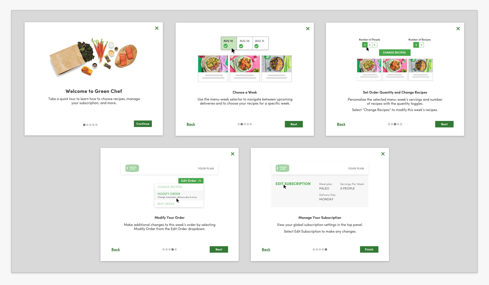
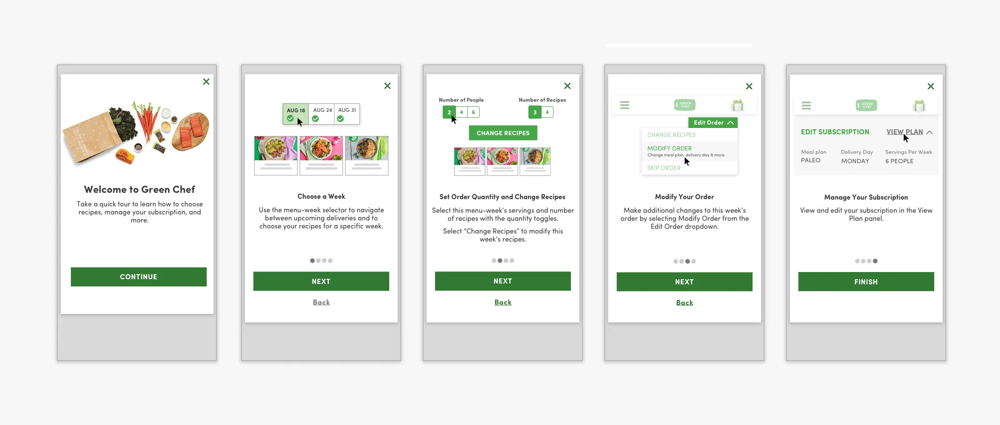
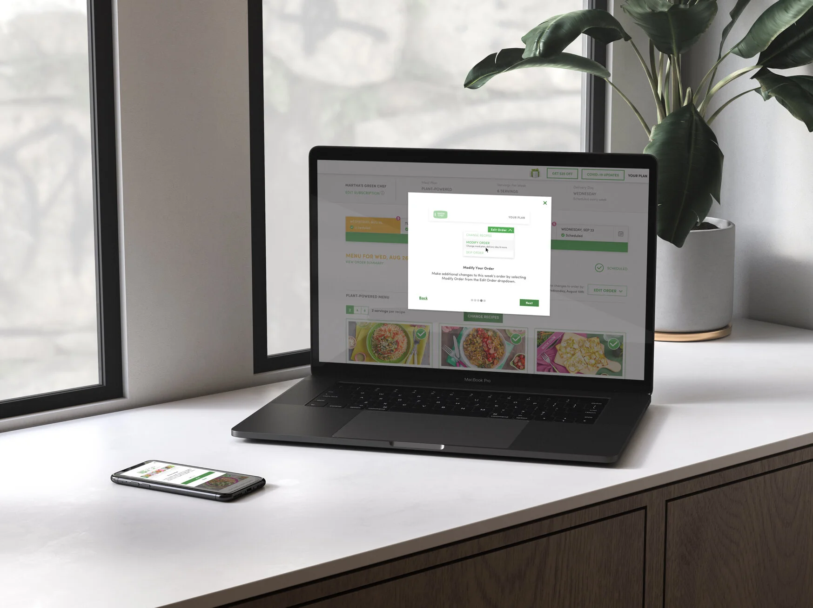

Onboarding redesign
New subscribers were cancelling before placing their first order. In two weeks I researched why, tested a coach marks tutorial that failed usability testing, pivoted to a carousel model, and shipped a solution that increased retention by 13% and improved NPS by 15 points.

Fig 01. Five-step carousel onboarding flow across mobile and desktop
Green Chef is a meal kit service built around diet-specific recipes: keto, paleo, vegan, and vegetarian. Subscribers manage everything through their account page: selecting weekly menus, adjusting delivery dates, skipping weeks, editing their subscription. It is the most critical surface in the product.
New customers were not using it. Data collected during sign-up and at cancellation told the same story: customers could not figure out how to manage their account or complete their first order. The interface was cluttered, navigation was hard to follow, and key features were buried. Competitors were offering cleaner transitions from sign-up to active use.
A full account page redesign was already on the roadmap but months out. The team needed a solution that could ship within weeks, inside the existing interface.

I set out to understand the experience and expectations of Green Chef subscribers, gathering data from new and recently subscribed users. The focus: understanding sign-up questions, subscription expectations, reasons for cancellation, and how to bridge the gap between prospective and committed customers.
The patterns across both sets were consistent. Customers were leaving for reasons that had nothing to do with the food. The same features that caused confusion at sign-up were the ones driving cancellations weeks later.
Top Reasons to Cancel
Fig 02. Top cancellation reasons from exit survey data
Top Sign-Up Questions
Fig 03. Most frequently asked questions during sign-up
I ran card sorting exercises with active subscribers to find out which account features they considered most important. The exercise grounded scope decisions in real user priorities rather than internal assumptions about what to design first.
Priority 1
Select current week's menu, select next week's menu, update delivery date. Control over what is coming and when came first for every participant.
Priority 2
Review pricing, select dietary preferences, contact Customer Care. Managing the ongoing relationship with the service and the subscription beyond the weekly menu.
Priority 3
Review recipe cards, skip a week, access referral incentives. Valuable features, but not the ones driving cancellation.
Primary Persona
Everly
35 · Working Professional
Household Income
$110,000
Education
Bachelor's Degree
Cooks for Family
4× per week
"Health and nutrition are important to me and my family. Balancing my busy career and taking care of my family are my main priorities."
Fig 04. Primary persona: Everly, 35 years old, $110K household income, cooks dinner for family four times per week
That framing shaped every copy and layout decision in the tutorial. If the onboarding asked too much of her time or attention, it would fail.
The research pointed toward a targeted onboarding tutorial focused on the features most tied to first-order completion and retention: menu selection, delivery management, and subscription editing. Not a tour of everything, and not a redesign of the account page. Just a guide to the actions that determined whether someone stayed subscribed.
In Scope
Guide first-time users through the specific features that influence whether they complete their first order and remain subscribed. Built to work within the existing interface without requiring engineering to rebuild anything beneath it.
Out of Scope
Tutorials for all features, the full customer journey, and a dedicated review onboarding feature were explicitly excluded. Keeping the scope narrow was what made the two-week timeline realistic.
There was a real risk here. An onboarding tutorial that felt slow or mandatory could frustrate users enough to cancel before they ever reached the account page. The design had to feel useful, not required.
I started with coach marks: tooltip overlays that highlight interface elements in sequence and explain each one before the user interacts with it. It is a common pattern for onboarding users to an existing interface without rebuilding it.
Usability testing showed it did not work here. The overlays competed with the content underneath rather than clarifying it. Users had to hold too much in mind at once. The cognitive load was higher with the tutorial than without it, which was the opposite of the goal.
I documented what failed and why, and moved on.

Fig 05. Coach marks approach: five tooltip steps overlaid on the existing account interface
Rather than layering explanations over a cluttered account page, the carousel model covered each concept on its own screen before the user landed in the account. One idea per step, with space to absorb it before the real UI appeared.
The revised design streamlined the copy, reduced the total number of steps, removed a cut-off date that had been shown in the first step and was causing confusion, and adapted every screen for both mobile and desktop. Five steps total, each covering one action.
Step 1
Set expectations before anything else. Orient the user to what they are about to learn so the steps that follow have context.
Step 2
The first action most users got wrong on their own. Covered here, isolated from everything else, before they see the account page.
Step 3
The core of placing an order. One step, one focus, with a clear visual to show what the interface looks like when it is done correctly.
Step 4
How to change an order after it is placed. One of the most-cited frustrations in cancellation data: users could not find this feature when they needed it.
Step 5
Skip a week, adjust frequency, manage dietary preferences. The features that came up most in sign-up FAQs and that subscribers needed to feel in control of the relationship.

Fig 06. Carousel model after pivot: five steps across mobile and desktop

Fig 07. Final high-fidelity carousel onboarding, desktop

Fig 08. Final high-fidelity carousel onboarding, mobile

The onboarding redesign addressed the cancellation drivers directly. First-order completion improved, and the friction that had been pushing subscribers out in their first week was measurably reduced. The framework established by this sprint was adopted for future onboarding development across the platform.
The coach marks approach seemed right until testing showed it was not. Changing direction mid-sprint, inside a two-week timeline, is the part of this project I think about most. The carousel worked because the failure of the first iteration made the problem clear: users needed the concepts before they needed the interface, not layered on top of it.
What made the pivot possible was having concrete criteria for what failure looked like. Coach marks failed because they increased cognitive load at the moment when a new subscriber most needed clarity. Once that was visible in testing, the path forward was not difficult to see.
What I would do differently: test the pattern earlier. A rough prototype of both approaches in the first few days would have surfaced the coach marks problem before I had committed to full wireframes. That would have left more time for refining the carousel and potentially testing additional variations of the final design.